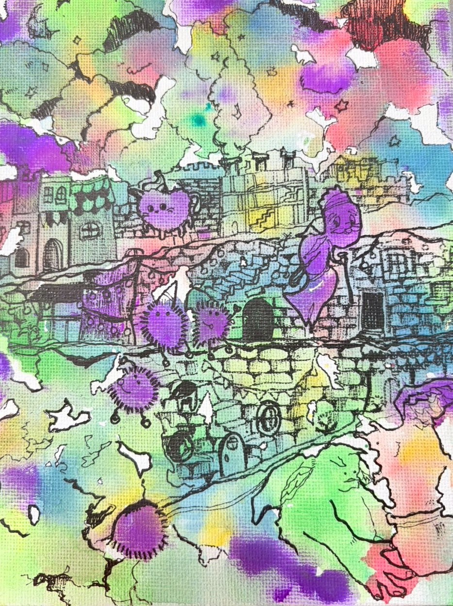

旅人が北の荒野を歩いていると、掃きだめの街にたどり着いた。
空気は重く、どこか甘い匂いが漂っている。
街の中心には古びた工場があり、
煙突からは淡い光の粒が絶えず吐き出されていた。
それが“夢”だった。
人工的に作られた、濁った夢。
かつて誰かが「いい夢だけを見よう」と願い、作られた場所だった。
だが工場が生み出した人工的な夢は澱んでいて、
自然の夢のような煌めきはどこにもなかった。
住民たちはその人工の夢を吸い込み続け、
体は紫に濁り、頭はゆっくりと“夢”でいっぱいになっていった。
もう何を考えているのか、分からなくなるほどに。
それでも住民たちは街を離れなかった。
“夢”に思考を押しつぶされて、考えられなかっただけかもしれない。
だが、だが、もし考える余地があったとしても、
きっと離れなかっただろう。
地図にもないほど小さく、忘れられてようが、掃きだめと呼ばれようが、
ここが自分たちの故郷であるから。
――――
旅人が胸やけがするほど甘い夢の煙に包まれた街を歩いていると、
様々な話を小耳に挟む。
街にはそこらじゅうに小さなけむくじゃらたちがいた。
彼らは濁った夢に侵され、何も考えられなくなった頭で、
それでも必死に街を元に戻そうとしていた。
壊れた灯りを直し、落ちた夢のかけらを拾い集め、
意味もわからぬまま、ただ“元の街”を求めて動き続けていた。
旅人はさらに街の奥に進むと、こんな話を聞いた。
とある場所では魔人の赤ん坊が害だと攫われ、壺に納めて売買された。
ここは掃きだめの街。そんなむごたらしい商品も最後にはここに流れ着く。
魔人の母は長い旅の末にその壺を見つけたという。
紫に濁った住民たちの間をかき分け、
ようやく抱きしめたその小さな命は、すでに人工の夢を吸い込んでいた。
――――
旅人はその光景を静かに見つめた。
甘い夢に堕ちる街。
体が紫色に濁った住民。
救われたはずの命と、取り返しのつかない時間。
そして、何もわからなくなってもなお、
街を守ろうとする者たち。
そんな忘れられても、掃きだめでも、
ここは確かに誰かの故郷だった。
――――
旅人は、胸の奥をかき乱す感情に耐えきれず、
そっと街を後にした。
甘い夢の臭いだけが、いつまでも衣に残っていた。